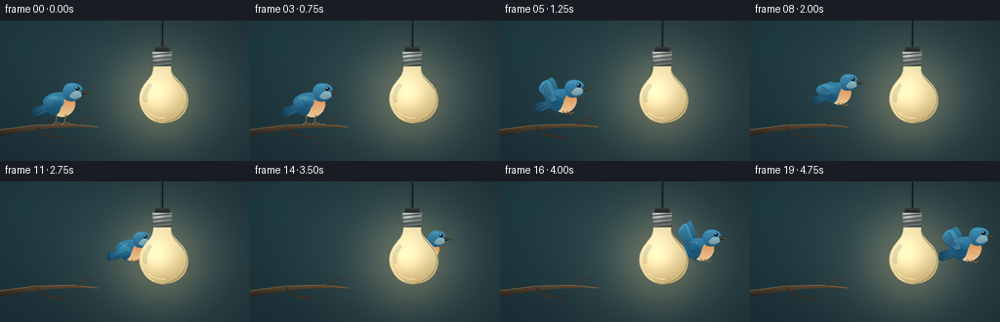
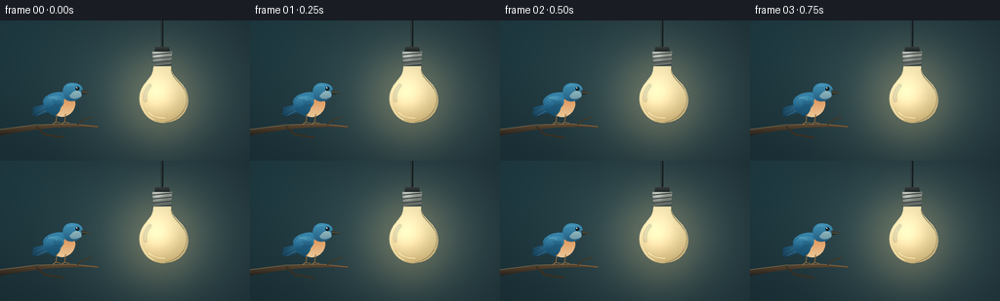

CODING AGENTS AS PIXEL WORLD MODELS
traex/GPT-6.1-Sol · dynamic_spatial_relationship_0041
点击播放 · 原生 RGB 像素
逐轮保存的候选
回放视频、检查图与代码变化。
每份候选均可单独播放。实际图片检查记录在下方工具轨迹中。
候选 01播放与检查图
点击播放 · 原生 RGB 像素


展开代码变化
--- 上一保存版本
+++ 本次保存版本
@@ -0,0 +1,157 @@
+from pathlib import Path
+import math
+import numpy as np
+from PIL import Image, ImageDraw, ImageFilter
+import artifact_io
+
+W,H,S=256,144,4
+SZ=(W*S,H*S)
+
+def path(commands):
+ pts=[]; p=(0,0)
+ for c in commands:
+ if c[0]=='M': p=(c[1],c[2]); pts.append(p)
+ elif c[0]=='L': p=(c[1],c[2]); pts.append(p)
+ elif c[0]=='C':
+ start=p
+ for t in np.linspace(0,1,22)[1:]:
+ q=((1-t)**3*start[0]+3*(1-t)**2*t*c[1]+3*(1-t)*t*t*c[3]+t**3*c[5],(1-t)**3*start[1]+3*(1-t)**2*t*c[2]+3*(1-t)*t*t*c[4]+t**3*c[6]);pts.append(q)
+ p=(c[5],c[6])
+ return pts
+
+def poly(im,pts,color):
+ ImageDraw.Draw(im).polygon([(round(x*S),round(y*S)) for x,y in pts], fill=color)
+
+def line(im,pts,color,width=1):
+ ImageDraw.Draw(im).line([(round(x*S),round(y*S)) for x,y in pts],fill=color,width=max(1,round(width*S)),joint='curve')
+
+def ellipse(im,box,color):
+ ImageDraw.Draw(im).ellipse(tuple(round(v*S) for v in box),fill=color)
+
+def shaded(im, pts, top, bottom, glow=None):
+ mask=Image.new('L',SZ,0); poly(mask,pts,255)
+ bb=mask.getbbox()
+ if bb is None:return
+ xx,yy=np.meshgrid(np.arange(bb[0],bb[2])/S,np.arange(bb[1],bb[3])/S)
+ a=np.clip((yy-bb[1]/S)/max(1,(bb[3]-bb[1])/S),0,1)
+ col=np.array(top)[None,None,:]*(1-a[...,None])+np.array(bottom)[None,None,:]*a[...,None]
+ if glow:
+ gx,gy,rad,amount=glow
+ l=np.exp(-((xx-gx)**2+(yy-gy)**2)/(rad**2))[:,:,None]
+ col=col+amount*l
+ layer=Image.fromarray(np.clip(col,0,255).astype('uint8'))
+ im.paste(layer,bb[:2],mask.crop(bb))
+
+# Fixed camera and a softly lit, defocused studio background.
+y,x=np.mgrid[0:H*S,0:W*S].astype(float);x/=S;y/=S
+v=np.exp(-((x-166)/88)**2-((y-74)/78)**2)
+a=np.exp(-((x-25)/94)**2-((y-26)/97)**2)
+bg=np.stack([24+39*v+5*a,43+43*v+12*a,49+38*v+13*a],axis=-1)
+rng=np.random.default_rng(44)
+bg+=rng.normal(0,.33,bg.shape)
+bg=Image.fromarray(np.uint8(np.clip(bg,0,255)))
+glow=Image.new('RGB',SZ,(0,0,0));ellipse(glow,(122,35,205,124),(38,25,8));glow=glow.filter(ImageFilter.GaussianBlur(16*S))
+bg=Image.fromarray(np.uint8(np.clip(np.asarray(bg).astype(float)+np.asarray(glow),0,255)))
+# A quiet branch anchors the bird's starting position.
+shaded(bg,path([('M',-4,113),('C',26,108,61,104,100,108),('L',101,110),('C',67,107,29,112,-4,119)]),(94,73,50),(35,31,26))
+line(bg,[(-2,112),(36,107),(74,106),(100,109)],(138,115,79),.65)
+line(bg,[(37,109),(46,117),(66,120)],(57,47,34),2)
+line(bg,[(79,107),(85,102),(94,99)],(66,55,37),1.2)
+
+# Bulb is drawn last, so the bird physically passes behind its frosted glass.
+def bulb(im):
+ line(im,[(166,0),(166,29)],(13,20,23),2.2)
+ line(im,[(165.5,0),(165.5,28)],(80,91,92),.45)
+ shaded(im,path([('M',159,27),('L',173,27),('L',174,33),('L',158,33)]),(56,61,59),(18,27,29))
+ shaded(im,path([('M',156,32),('L',176,32),('L',175,48),('L',157,48)]),(154,157,149),(68,76,74),glow=(161,36,6,57))
+ for cy in [34,38,42,46]:
+ line(im,[(156.5,cy+1),(175.5,cy-1)],(47,60,61),1.3)
+ line(im,[(157,cy-.1),(175,cy-2)],(197,196,175),.55)
+ # Familiar lightbulb silhouette: narrow neck, full pear-shaped globe.
+ pts=path([('M',157,47),('C',157,56,153,58,148,65),('C',141,74,141,85,147,94),('C',151,101,159,105,166,105),('C',176,105,186,101,190,92),('C',195,82,192,71,185,64),('C',179,57,175,55,175,47)])
+ shaded(im,pts,(230,216,166),(191,165,106),glow=(160,76,23,62))
+ # Warm frosted glass, subdued rim and smooth curved highlights.
+ line(im,path([('M',157,49),('C',157,59,147,63,145,75),('C',142,86,148,98,158,102)]),(245,231,179),.65)
+ line(im,path([('M',175,50),('C',176,61,188,64,191,77),('C',193,91,182,102,169,104)]),(148,136,98),.65)
+ highlight=Image.new('RGBA',SZ)
+ line(highlight,path([('M',154,66),('C',149,71,147,78,149,83)]),(255,254,223,145),2.3)
+ highlight=highlight.filter(ImageFilter.GaussianBlur(.8*S));im.paste(highlight,(0,0),highlight)
+ line(im,path([('M',152,94),('C',156,99,163,100,169,100)]),(255,237,184),.7)
+
+
+def bird(im,cx,cy,phase,flight,scale=1):
+ # Drawing coordinates follow the bird; fine feather detail remains coherent.
+ def tr(pts): return [(cx+xx*scale,cy+yy*scale) for xx,yy in pts]
+ def pp(commands):return tr(path(commands))
+ def ln(pts,col,w=.6):line(im,tr(pts),col,w*scale)
+ def el(b,col):ellipse(im,(cx+b[0]*scale,cy+b[1]*scale,cx+b[2]*scale,cy+b[3]*scale),col)
+ def sh(commands,top,bottom):shaded(im,pp(commands),top,bottom)
+ up=math.sin(phase)
+ # Far wing, visible on either side of the body's outline during flight.
+ if flight:
+ far=[('M',-4,-5),('C',-5,-14,-8,-25*up-8,-12,-28*up-7),('C',-21,-25*up-5,-19,-14*up-2,-9,3),('L',2,2)]
+ sh(far,(57,130,158),(22,67,93))
+ # Spread tapered tail feathers.
+ for j in range(4):
+ pts=[(-10,0),(-28-j*.6,5+j*2.3),(-28+j*.8,8+j*2.2),(-8,9)]
+ shaded(im,tr(pts),(39+j*4,103+j*5,137+j*5),(20,55,77))
+ ln([(-24,7+j*2),(-11,5+j*.4)],(84,143,165),.45)
+ sh([('M',-15,-6),('C',-8,-12,5,-12,11,-7),('C',17,-2,13,10,5,14),('C',-5,18,-16,10,-17,3),('C',-19,0,-18,-4,-15,-6)],(56,134,173),(19,70,98))
+ # Peach chest and pale lower breast identify a small songbird.
+ sh([('M',6,-6),('C',15,-6,17,1,13,8),('C',9,14,2,17,-5,13),('C',2,9,-1,2,6,-6)],(222,144,84),(234,201,153))
+ # Feet tuck beneath the breast once airborne.
+ if flight:
+ ln([(0,13),(4,16),(8,15)],(114,81,48),.8)
+ ln([(4,13),(9,16),(12,14)],(148,104,58),.7)
+ else:
+ for off in [-4,5]:
+ ln([(off,12),(off-1,20),(off+4,21)],(140,100,56),1)
+ ln([(off-1,20),(off-4,22)],(164,118,61),.65)
+ # Near wing changes from folded contour to articulated flight feathers.
+ if flight:
+ root=(-5,-3)
+ tip=(-18,-26*up-5)
+ outer=(-25,-21*up+1)
+ wing=path([('M',root[0],root[1]),('C',-10,-9,-13,tip[1]-2,tip[0],tip[1]),('C',-22,tip[1]+1,outer[0],outer[1]-3,outer[0],outer[1]),('C',-23,outer[1]+5,-12,10,-4,7),('C',1,5,2,0,root[0],root[1])])
+ shaded(im,tr(wing),(70,157,193),(20,76,114))
+ # Long primary feather strokes fan across the wing.
+ for j in range(6):
+ f=j/5
+ end=(-18-7*f,tip[1]*(1-f)+outer[1]*f+2)
+ ln([(-5-j*.9,3+j*.2),(-12-j*1.1,(end[1]+4)/2),end],(18,61,89),.65)
+ ln([(-6-j*.9,2+j*.2),(-11.5-j*1.1,(end[1]+3)/2),(end[0]+.6,end[1])],(91,161,187),.4)
+ else:
+ sh([('M',-10,-6),('C',-3,-9,5,-5,3,1),('C',1,7,-8,9,-15,8),('C',-18,3,-16,-4,-10,-6)],(66,146,181),(21,77,113))
+ for j in range(5):ln([(-8+j*2,-2),(-6+j*1.5,2),(-14+j*2,8)],(31,86,117),.65)
+ ln([(-12,-5),(-7,-5),(-3,-3)],(111,179,199),.5)
+ # Rounded head with blue cap, light cheek, and a glossy eye.
+ sh([('M',3,-8),('C',0,-15,6,-21,12,-20),('C',21,-20,24,-15,22,-9),('C',21,-2,10,1,5,-3)],(65,147,184),(34,91,124))
+ sh([('M',13,-11),('C',17,-13,22,-12,21,-6),('C',16,-3,10,-3,9,-7)],(143,183,189),(111,151,166))
+ # Small pointed beak faces right for the whole flight.
+ sh([('M',21,-13),('L',31,-10),('L',22,-8)],(67,67,54),(30,36,35))
+ ln([(22,-10.4),(29,-10.1)],(166,149,102),.35)
+ el((15.2,-16.3,19.3,-12.2),(9,23,29))
+ el((15.9,-15.8,17.2,-14.5),(235,249,248))
+ el((17.8,-13.8,18.3,-13.3),(113,160,174))
+ ln([(7,-17),(11,-18.1),(14,-17.4)],(122,186,206),.6)
+ # Subtle small feathers on the mantle.
+ for j in range(5):ln([(-13+j*2,-7+j*.15),(-12+j*2,-5+j*.15)],(102,164,184),.45)
+
+
+def smooth(a): return a*a*(3-2*a)
+frames=[]
+for i in range(20):
+ im=bg.copy()
+ if i<4:
+ cx,cy=62,84+math.sin(i*.6)*.3; flying=False;sc=1.;ph=0
+ else:
+ u=(i-4)/15
+ # Continuous left-to-right flight, slightly receding behind the bulb.
+ cx=62+160*smooth(u)
+ cy=83-13*math.sin(min(u*1.9,1)*math.pi/2)-3*u
+ flying=True; sc=1-.14*math.sin(math.pi*u)
+ ph=(i-4)*2.25+.3
+ bird(im,cx,cy,ph,flying,sc)
+ bulb(im)
+ frames.append(np.asarray(im.resize((W,H),Image.Resampling.LANCZOS).convert('RGB')))
+artifact_io.save(np.stack(frames),Path(__file__).resolve().parent)
可观测工具轨迹
实际执行的命令与返回图片。
命令 1exit 0
/bin/bash -lc 'ls -la && cat prompt.txt && cat GENERATION_RULES.md && cat task_spec.json'
命令 2exit 0
/bin/bash -lc "cat artifact_io.py && python - <<'PY'
import PIL, numpy
print('available', PIL.__version__)
PY"命令 3exit 0
/bin/bash -lc "cat > generate.py <<'PY'
from pathlib import Path
import math
import numpy as np
from PIL import Image, ImageDraw, ImageFilter
import artifact_io
W,H,S=256,144,4
SZ=(W*S,H*S)
def path(commands):
pts=[]; p=(0,0)
for c in commands:
if c[0]=='M': p=(c[1],c[2]); pts.append(p)
elif c[0]=='L': p=(c[1],c[2]); pts.append(p)
elif c[0]=='C':
start=p
for t in np.linspace(0,1,22)[1:]:
q=((1-t)**3*start[0]+3*(1-t)**2*t*c[1]+3*(1-t)*t*t*c[3]+t**3*c[5],(1-t)**3*start[1]+3*(1-t)**2*t*c[2]+3*(1-t)*t*t*c[4]+t**3*c[6]);pts.append(q)
p=(c[5],c[6])
return pts
def poly(im,pts,color):
ImageDraw.Draw(im).polygon([(round(x*S),round(y*S)) for x,y in pts], fill=color)
def line(im,pts,color,width=1):
ImageDraw.Draw(im).line([(round(x*S),round(y*S)) for x,y in pts],fill=color,width=max(1,round(width*S)),joint='curve')
def ellipse(im,box,color):
ImageDraw.Draw(im).ellipse(tuple(round(v*S) for v in box),fill=color)
def shaded(im, pts, top, bottom, glow=None):
mask=Image.new('L',SZ,0); poly(mask,pts,255)
bb=mask.getbbox()
if bb is None:return
xx,yy=np.meshgrid(np.arange(bb[0],bb[2])/S,np.arange(bb[1],bb[3])/S)
a=np.clip((yy-bb[1]/S)/max(1,(bb[3]-bb[1])/S),0,1)
col=np.array(top)[None,None,:]*(1-a[...,None])+np.array(bottom)[None,None,:]*a[...,None]
if glow:
gx,gy,rad,amount=glow
l=np.exp(-((xx-gx)**2+(yy-gy)**2)/(rad**2))[:,:,None]
col=col+amount*l
layer=Image.fromarray(np.clip(col,0,255).astype('uint8'))
im.paste(layer,bb[:2],mask.crop(bb))
# Fixed camera and a softly lit, defocused studio background.
y,x=np.mgrid[0:H*S,0:W*S].astype(float);x/=S;y/=S
v=np.exp(-((x-166)/88)**2-((y-74)/78)**2)
a=np.exp(-((x-25)/94)**2-((y-26)/97)**2)
bg=np.stack([24+39*v+5*a,43+43*v+12*a,49+38*v+13*a],axis=-1)
rng=np.random.default_rng(44)
bg+=rng.normal(0,.33,bg.shape)
bg=Image.fromarray(np.uint8(np.clip(bg,0,255)))
glow=Image.new('RGB',SZ,(0,0,0));ellipse(glow,(122,35,205,124),(38,25,8));glow=glow.filter(ImageFilter.GaussianBlur(16*S))
bg=Image.fromarray(np.uint8(np.clip(np.asarray(bg).astype(float)+np.asarray(glow),0,255)))
# A quiet branch anchors the bird's starting position.
shaded(bg,path([('M',-4,113),('C',26,108,61,104,100,108),('L',101,110),('C',67,107,29,112,-4,119)]),(94,73,50),(35,31,26))
line(bg,[(-2,112),(36,107),(74,106),(100,109)],(138,115,79),.65)
line(bg,[(37,109),(46,117),(66,120)],(57,47,34),2)
line(bg,[(79,107),(85,102),(94,99)],(66,55,37),1.2)
# Bulb is drawn last, so the bird physically passes behind its frosted glass.
def bulb(im):
line(im,[(166,0),(166,29)],(13,20,23),2.2)
line(im,[(165.5,0),(165.5,28)],(80,91,92),.45)
shaded(im,path([('M',159,27),('L',173,27),('L',174,33),('L',158,33)]),(56,61,59),(18,27,29))
shaded(im,path([('M',156,32),('L',176,32),('L',175,48),('L',157,48)]),(154,157,149),(68,76,74),glow=(161,36,6,57))
for cy in [34,38,42,46]:
line(im,[(156.5,cy+1),(175.5,cy-1)],(47,60,61),1.3)
line(im,[(157,cy-.1),(175,cy-2)],(197,196,175),.55)
# Familiar lightbulb silhouette: narrow neck, full pear-shaped globe.
pts=path([('M',157,47),('C',157,56,153,58,148,65),('C',141,74,141,85,147,94),('C',151,101,159,105,166,105),('C',176,105,186,101,190,92),('C',195,82,192,71,185,64),('C',179,57,175,55,175,47)])
shaded(im,pts,(230,216,166),(191,165,106),glow=(160,76,23,62))
# Warm frosted glass, subdued rim and smooth curved highlights.
line(im,path([('M',157,49),('C',157,59,147,63,145,75),('C',142,86,148,98,158,102)]),(245,231,179),.65)
line(im,path([('M',175,50),('C',176,61,188,64,191,77),('C',193,91,182,102,169,104)]),(148,136,98),.65)
highlight=Image.new('RGBA',SZ)
line(highlight,path([('M',154,66),('C',149,71,147,78,149,83)]),(255,254,223,145),2.3)
highlight=highlight.filter(ImageFilter.GaussianBlur(.8*S));im.paste(highlight,(0,0),highlight)
line(im,path([('M',152,94),('C',156,99,163,100,169,100)]),(255,237,184),.7)
def bird(im,cx,cy,phase,flight,scale=1):
# Drawing coordinates follow the bird; fine feather detail remains coherent.
def tr(pts): return [(cx+xx*scale,cy+yy*scale) for xx,yy in pts]
def pp(commands):return tr(path(commands))
def ln(pts,col,w=.6):line(im,tr(pts),col,w*scale)
def el(b,col):ellipse(im,(cx+b[0]*scale,cy+b[1]*scale,cx+b[2]*scale,cy+b[3]*scale),col)
def sh(commands,top,bottom):shaded(im,pp(commands),top,bottom)
up=math.sin(phase)
# Far wing, visible on either side of the body's outline during flight.
if flight:
far=[('M',-4,-5),('C',-5,-14,-8,-25*up-8,-12,-28*up-7),('C',-21,-25*up-5,-19,-14*up-2,-9,3),('L',2,2)]
sh(far,(57,130,158),(22,67,93))
# Spread tapered tail feathers.
for j in range(4):
pts=[(-10,0),(-28-j*.6,5+j*2.3),(-28+j*.8,8+j*2.2),(-8,9)]
shaded(im,tr(pts),(39+j*4,103+j*5,137+j*5),(20,55,77))
ln([(-24,7+j*2),(-11,5+j*.4)],(84,143,165),.45)
sh([('M',-15,-6),('C',-8,-12,5,-12,11,-7),('C',17,-2,13,10,5,14),('C',-5,18,-16,10,-17,3),('C',-19,0,-18,-4,-15,-6)],(56,134,173),(19,70,98))
# Peach chest and pale lower breast identify a small songbird.
sh([('M',6,-6),('C',15,-6,17,1,13,8),('C',9,14,2,17,-5,13),('C',2,9,-1,2,6,-6)],(222,144,84),(234,201,153))
# Feet tuck beneath the breast once airborne.
if flight:
ln([(0,13),(4,16),(8,15)],(114,81,48),.8)
ln([(4,13),(9,16),(12,14)],(148,104,58),.7)
else:
for off in [-4,5]:
ln([(off,12),(off-1,20),(off+4,21)],(140,100,56),1)
ln([(off-1,20),(off-4,22)],(164,118,61),.65)
# Near wing changes from folded contour to articulated flight feathers.
if flight:
root=(-5,-3)
tip=(-18,-26*up-5)
outer=(-25,-21*up+1)
wing=path([('M',root[0],root[1]),('C',-10,-9,-13,tip[1]-2,tip[0],tip[1]),('C',-22,tip[1]+1,outer[0],outer[1]-3,outer[0],outer[1]),('C',-23,outer[1]+5,-12,10,-4,7),('C',1,5,2,0,root[0],root[1])])
shaded(im,tr(wing),(70,157,193),(20,76,114))
# Long primary feather strokes fan across the wing.
for j in range(6):
f=j/5
end=(-18-7*f,tip[1]*(1-f)+outer[1]*f+2)
ln([(-5-j*.9,3+j*.2),(-12-j*1.1,(end[1]+4)/2),end],(18,61,89),.65)
ln([(-6-j*.9,2+j*.2),(-11.5-j*1.1,(end[1]+3)/2),(end[0]+.6,end[1])],(91,161,187),.4)
else:
sh([('M',-10,-6),('C',-3,-9,5,-5,3,1),('C',1,7,-8,9,-15,8),('C',-18,3,-16,-4,-10,-6)],(66,146,181),(21,77,113))
for j in range(5):ln([(-8+j*2,-2),(-6+j*1.5,2),(-14+j*2,8)],(31,86,117),.65)
ln([(-12,-5),(-7,-5),(-3,-3)],(111,179,199),.5)
# Rounded head with blue cap, light cheek, and a glossy eye.
sh([('M',3,-8),('C',0,-15,6,-21,12,-20),('C',21,-20,24,-15,22,-9),('C',21,-2,10,1,5,-3)],(65,147,184),(34,91,124))
sh([('M',13,-11),('C',17,-13,22,-12,21,-6),('C',16,-3,10,-3,9,-7)],(143,183,189),(111,151,166))
# Small pointed beak faces right for the whole flight.
sh([('M',21,-13),('L',31,-10),('L',22,-8)],(67,67,54),(30,36,35))
ln([(22,-10.4),(29,-10.1)],(166,149,102),.35)
el((15.2,-16.3,19.3,-12.2),(9,23,29))
el((15.9,-15.8,17.2,-14.5),(235,249,248))
el((17.8,-13.8,18.3,-13.3),(113,160,174))
ln([(7,-17),(11,-18.1),(14,-17.4)],(122,186,206),.6)
# Subtle small feathers on the mantle.
for j in range(5):ln([(-13+j*2,-7+j*.15),(-12+j*2,-5+j*.15)],(102,164,184),.45)
def smooth(a): return a*a*(3-2*a)
frames=[]
for i in range(20):
im=bg.copy()
if i<4:
cx,cy=62,84+math.sin(i*.6)*.3; flying=False;sc=1.;ph=0
else:
u=(i-4)/15
# Continuous left-to-right flight, slightly receding behind the bulb.
cx=62+160*smooth(u)
cy=83-13*math.sin(min(u*1.9,1)*math.pi/2)-3*u
flying=True; sc=1-.14*math.sin(math.pi*u)
ph=(i-4)*2.25+.3
bird(im,cx,cy,ph,flying,sc)
bulb(im)
frames.append(np.asarray(im.resize((W,H),Image.Resampling.LANCZOS).convert('RGB')))
artifact_io.save(np.stack(frames),Path(__file__).resolve().parent)
PY
python generate.py"视觉工具实际返回图片 1

保存候选 1 份；完成命令 3 次；可验证图片返回 1 张。原始 API 响应与完整日志保留在本地。